投稿日2022-11-17
前回までのあらすじ
SL-M640でアルタスを引こうとしたけど無理そうだった。▼
フリクション化してアルタスを格安10速化した。▼
もう終わろうと思ったらZTTOの11-42Tが届いた。▼
――最終決戦へ
AliExpressからの刺客
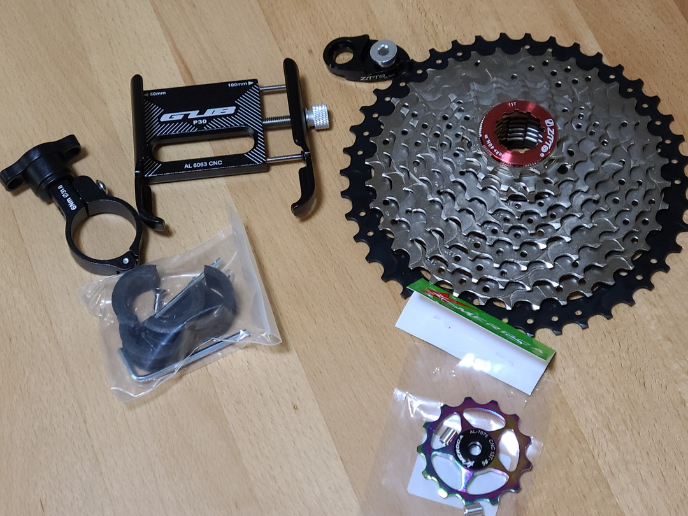
と、いうことでZTTOの11-42Tとその他諸々が1週間くらいで届いた。いや早すぎないか。自分が最後に利用した時3週間くらいかかった記憶あるんだが。
あと地味にプルダウンで都道府県を選べるようになってて驚いた。ずいぶん優しい仕様になったなAliくん……。
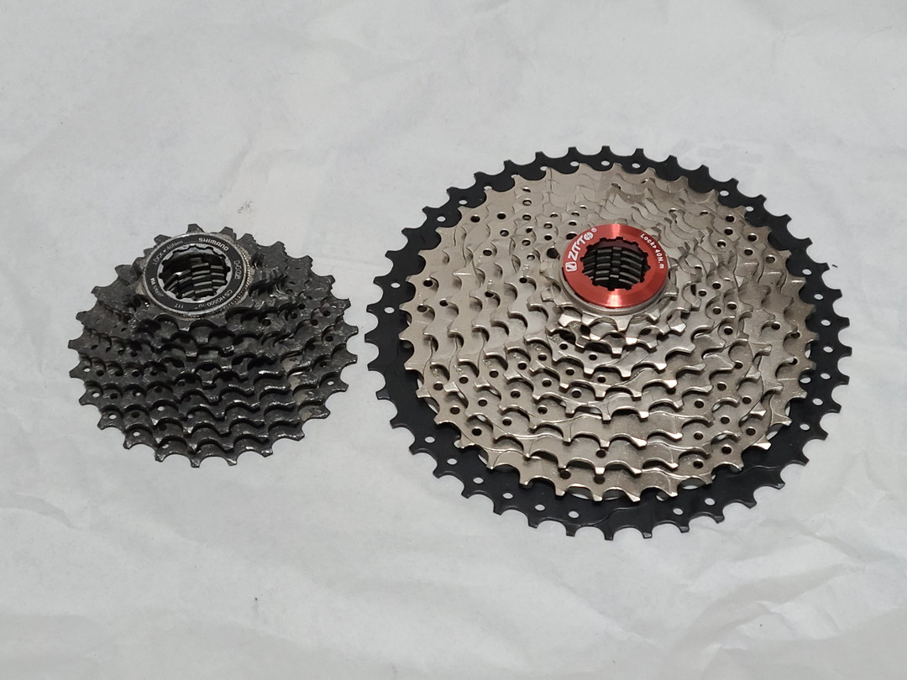
そんな戯言はおいておいて、HG-500とZTTOの11-42を比べる。いやとんでもなくでけえな。考えてみれば自転車界隈って34Tで乙女ギアと言われていたのに42Tって……。どうやらこのサイズ以上ギアが平然と使われるようになったのは比較的最近のことらしい。フロントシングル化が進んでいる影響なのかなんなのか。
それにしてもAltus RD-M310の最大ギアは34Tまでである。なぜこんな規格外を選んだかというとやっている人がいたから。あと3000円弱で買えたから。ということ以外に言うことがない。ただ10s+42Tは観測範囲では見たこと無いので小さな冒険ではある。
作業開始
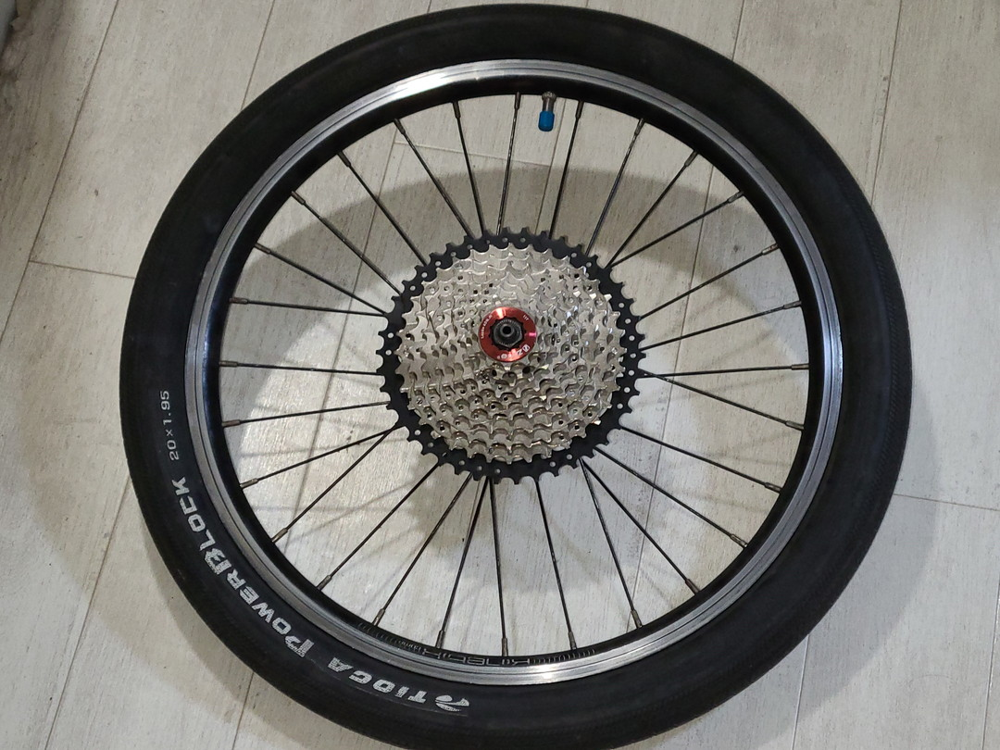
デカ過ぎんだろ...。考えてみれば42Tってフロントのチェーンリングになっててもおかしくないサイズだ。それを406ホイールに刺してるわけだからとんでもなく目立つ。なんか国旗みたいな見た目になってしまった。
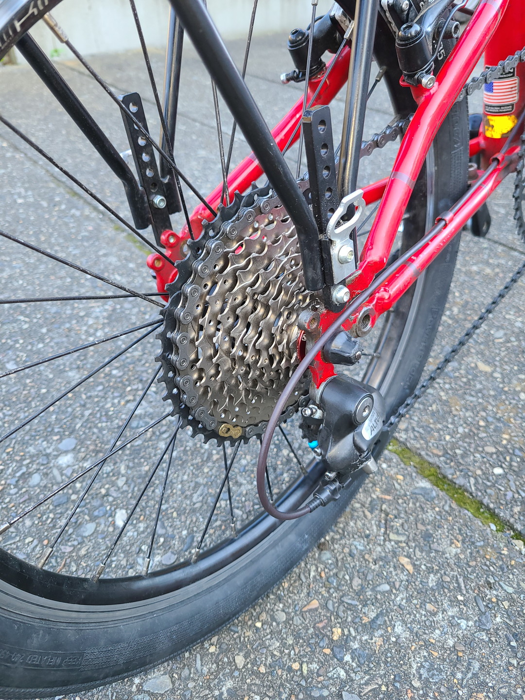
とりあえず前回の状態からスプロケットだけ変えてみた。52T-42Tなのでチェーンのコマ数が足りなくなることを危惧したがそこは116Lで問題なかった。しかし36Tまでは上がるが42Tまで入ってくれない。とりあえずアジャストボルトを色々弄ってたら42Tにハイッ。
という音とともにチェーンがディレーラーのプーリーでスタックして動かなくなった。なんかプーリーゲージがひん曲がった。やばい。あまりにも衝撃的すぎて写真を撮るのを忘れてた。とりあえず曲がりは無理やり直してポン付けは諦めることにした。
ちなみにディレーラーは違うがそれぞれ最大34Tまで対応しているもので42Tを引いている動画と記事。どうやらBテンションボルトをうまく調整したり長くしたりすることでできるようだ。
ウルフトゥースのRoadLinkの…
ポン付けは諦めたのでもっと確実な方法を試してみることにした。Aliから届いた写真一覧にも写っていたが……。
WolfToothというMTBパーツで有名な会社のRoadLink……
のパチ、コピー品である。なぜかZTTO42T以上のスプロケットを買うとおまけでついてくる。ぶっちゃけ40について来てもいい気がするけど絶対につけない。他の中華メーカーも42とか46からおまけにつけていた。本家は11-42をサポート外としているが、動かしてる動画が無限にあったので試してみることにした。
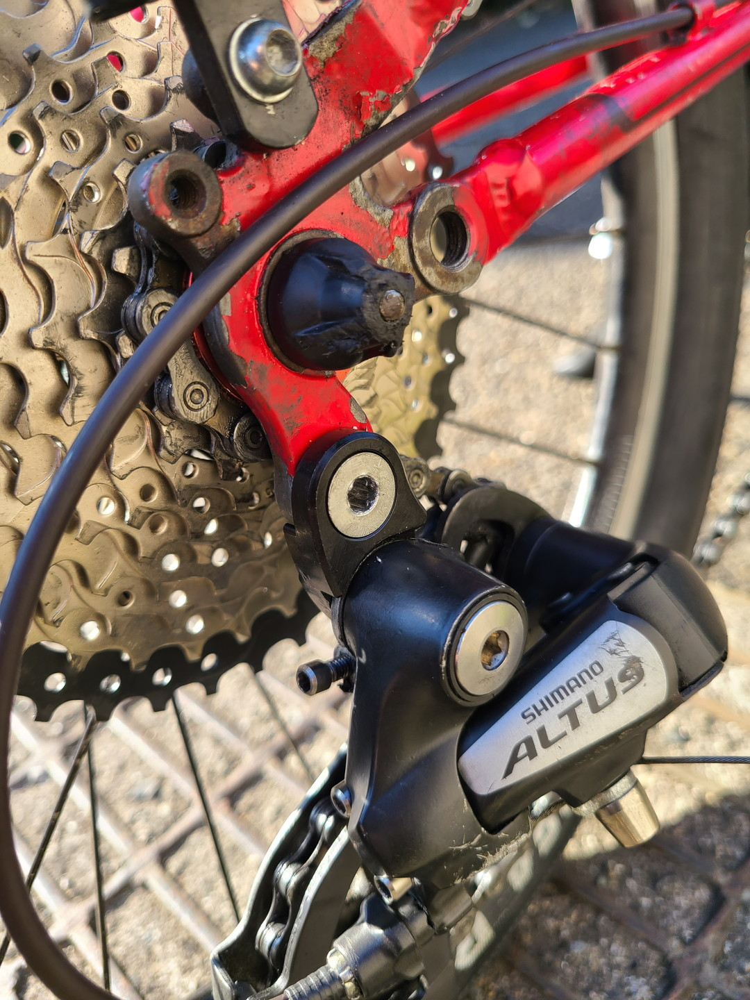
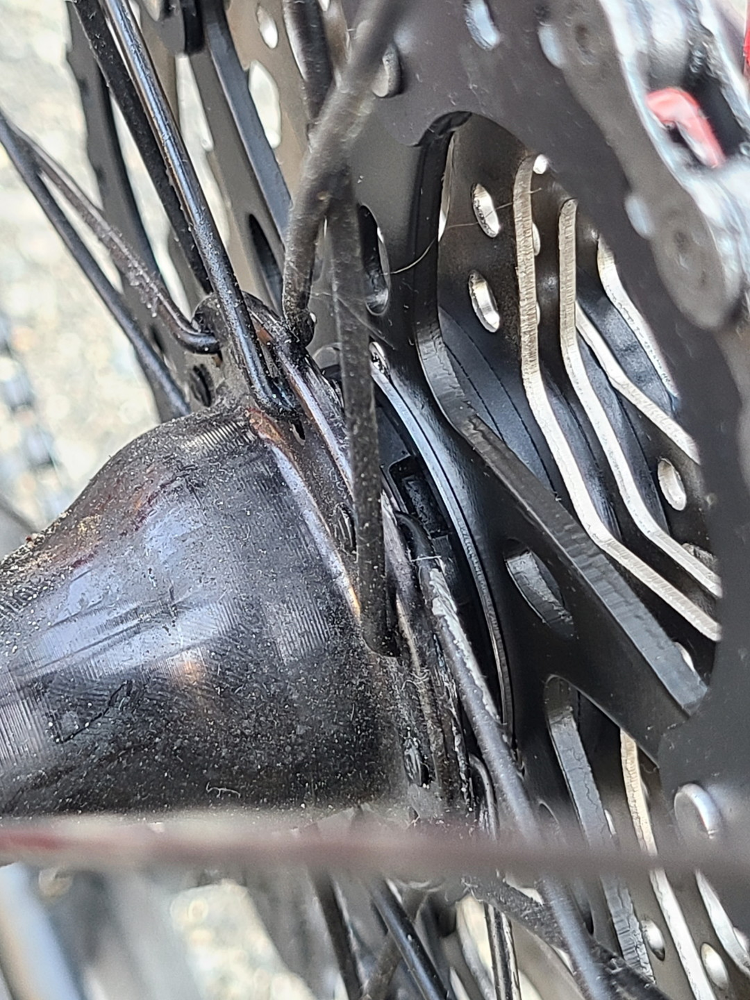
とりあえずつけてみる。ググったがとりあえずこいつはI字にぶら下げて使うみたいだ。ちなみに速攻ネジ穴は舐めた。
あとチェーンが地味にタイヤに当たりそう+トップ側に余裕がありそうだったので1mmスペーサーを奥に入れた。そういえば10sは物によってはスペーサーを入れないといけないらしいが、こいつはどうなんだろうか。別にポン付けでもぐらつくということはなさそうだったが。
これ終わったらスポーク替えないとヤバそうだなぁ、とか思いながら再調整をしてみる。
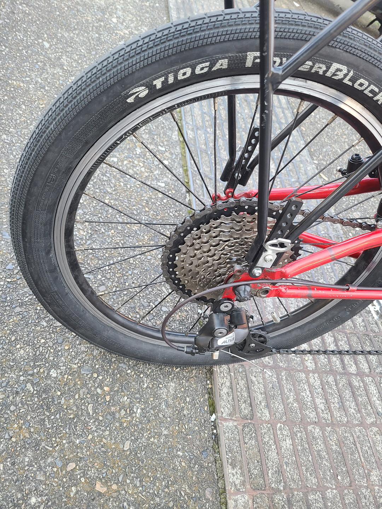
なんてこともなく変速できてしまった。ということで、Altus RD-M310の10s化および11-42T対応完成！終わり！完！よしおわりおわり……。
……はい。やります。
なにがDyna-Sysだよ…
前々回で愚かにも下調べをせずに安いからという理由でZeeのSL-M640を購入した自分。だが、ロード10sシフターでないとアルタス10速はできないと知り、フリクション化というチートでお茶を濁したのであった。でもやっぱりトリガータイプのカチカチ感が好きなのでやっぱりインデックスにしたい。SL-4600を買い直すのは芸がない。あとインジケータいらん。あれ見る人どんくらいいるんだ？確かSTIだともうとっくに廃止されてたはずだし。Di2だとトップロー以上に引くと警告音がなるシステムがあるらしい。要はそのくらいインジケータの実用性が少ないんだろう。アクセサリーとしては楽しいんだろうけどね。兎にも角にも今のハンドルバーだと邪魔にしかならないのでSL-M640はちょうどいい。などと正当化をしつつ、なぜ引けないのかを調べていく。
ここらへんの情報は錯綜しすぎてて正確な記事を貼ることも難しいので自分で調べたことを書いていこうと思う。
第一に引き量が大きくなった。これは確実。実際6速くらいの変速でローまで入ってしまう。なにやら1.4倍だとか1.5倍だとかそんくらい違うらしい。しかし、スプロケット側の幅がロードと同じなはずなので同時にディレーラーのスプリングの仕様が変わったのだろう。
これがダイナシスの正体かな。ちなみにロードコンポは11速から違うようなので(tiagra4700除く)、10速までは色々と組み合わせることが可能らしい。とりあえずシフターの現物があるので色々と見てみることにした。
シフターを調べる
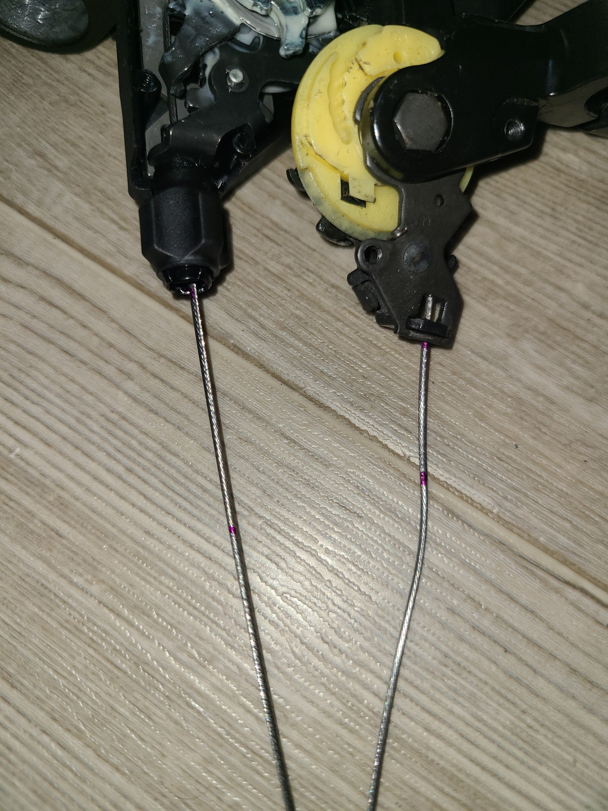
左がSL-M640,右がSL-M310のシフター。線をつけてどこまでワイヤーを引いていくか調べてみた。8速用と10速でスプロケットの幅に変化はないか8速用のほうが幅広なので、引き量に差があるということはやはり互換性がないということになるのだろう。
何回か印を付け直して測った感じではSL-M310が20mm,SL-M640が33.5mmくらい引いていた。素人調べなのでいい加減だが確かにネットにある1.4倍とか1.5倍という情報通りだと思われる。
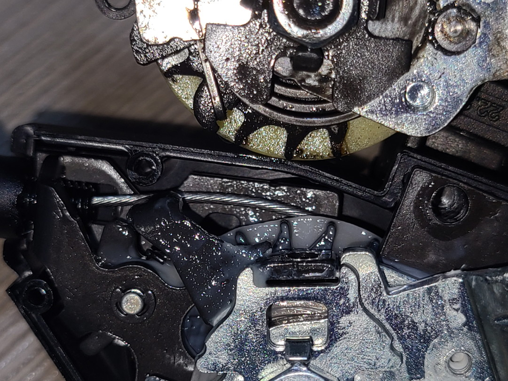
あとはシフターがどうやって1回の引き量を決めているのかを調べてみた。指でシフターを押すと台座が周り歯車が返しに当たって固定される仕組みらしい。
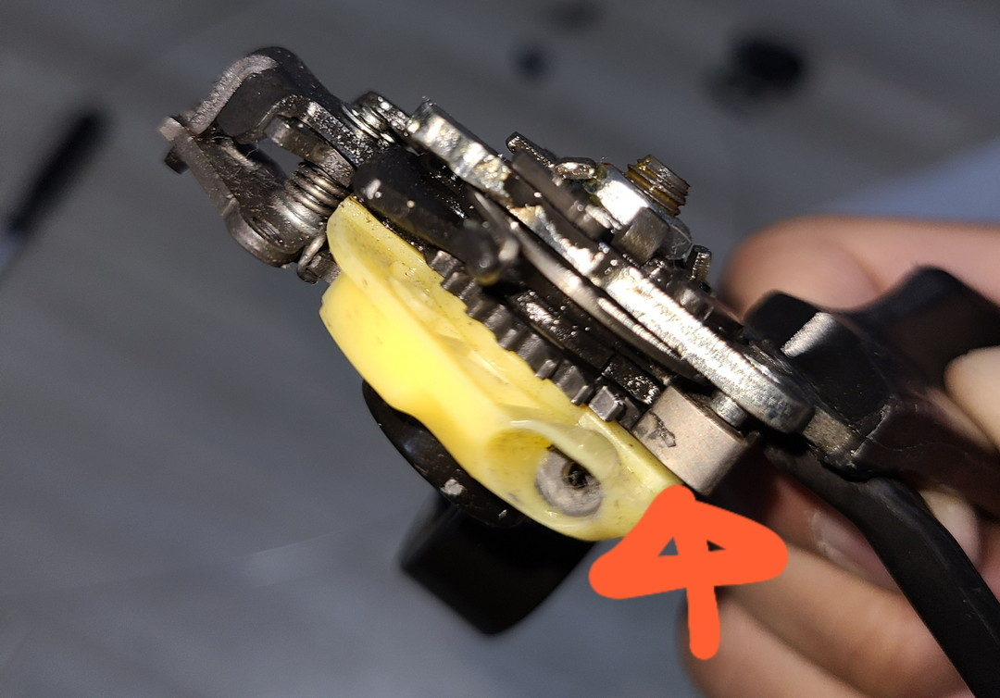
ちなみに反対側に小さい歯と矢印で示した返しがある。相互に作用することで引ける回数を決定している。ということは歯の部分を加工すれば引き量を調整できるのでは無いかと思ったけど未知数なのでやめておいた。
しかし歯数で決まるということは、この動画のようにSTIの遊びを使って9速シフターで10速を引くということはできなさそうだ。STIの構造はどうなっているんだ……これ以上は沼なので考えないでおこう。
解決策
一応、シマニョーロ大回しという古の技をやってみた。これはカンパとシマノの引き量が違うけれどミックスしたいという先人たちが編み出した技で、ディレーラーのワイヤー固定部分でワイヤーを曲げて引き量を無理やり緩和させるという力技だ。
これをやったらローまで真ん中一段飛んで9速変速ができた。だが、トップに下げる時は酷かった。
シフターの歯かディレーラーのスプリングを改造すれば上手く行く？いやしかし、かなりの数ディレーラーを無駄にしそうだなと思いアイテムに頼ることにした。
一つはまたWolftoothから出てるtanpanというもので基本的にはSTIでMTBコンポを引きたい人用に引き量を途中で変換してしまうという魔法のようなアイテムになっている。これを逆付けしたらできるのでは？と思ったけれど調べてた段階だと確証がなかったのと7000円はちょっと高すぎるのでなしかなとなった。ちなみにアマゾンのレビューでやっている人はいたのでできるっぽい。
私が選んだのはShiftmate#6だった。これは公式のリストで可能だと書いてあるのに加え一応tanpanよりは安い。あとプーリーを変えれば色々と変換できそうだということもあり試すことにした。
価格はSJSサイクルとかいうイギリスのECサイトで30ポンドほど。送料含めると40ポンド、日本円換算で6600円。はい。どっちにしろDeore生やせる。一応IKDという日本代理店で買うと6100円らしいが6まで売っているのかは不明。昔は3000円位で買えたみたいなので悲しい。そもそもこいつもシマニョーロ化のためによく使われていたアイテムらしいがイコールプーリーという技術革新によって淘汰された……と思いこんでいたらまだまだ現役だったという感じのもの。
ちなみに中古が5000円位で売ってたのでそれを買った。どっちにしろDeore買った方が早い安いうまい。
設置
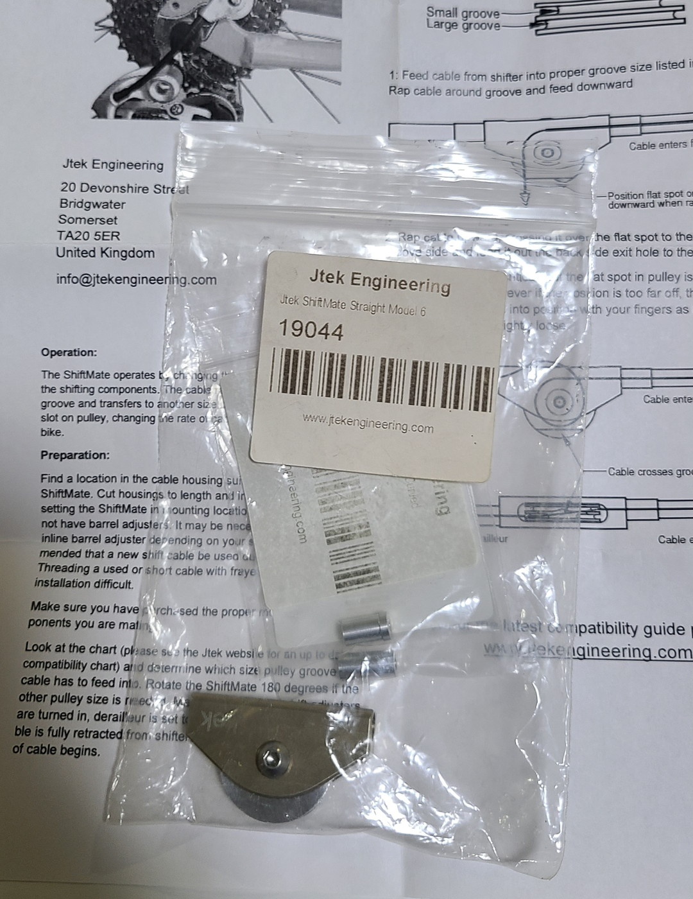
とりあえずシフトメイトの仕様を見てみる。本体と英語の説明書とキャップ2つ。
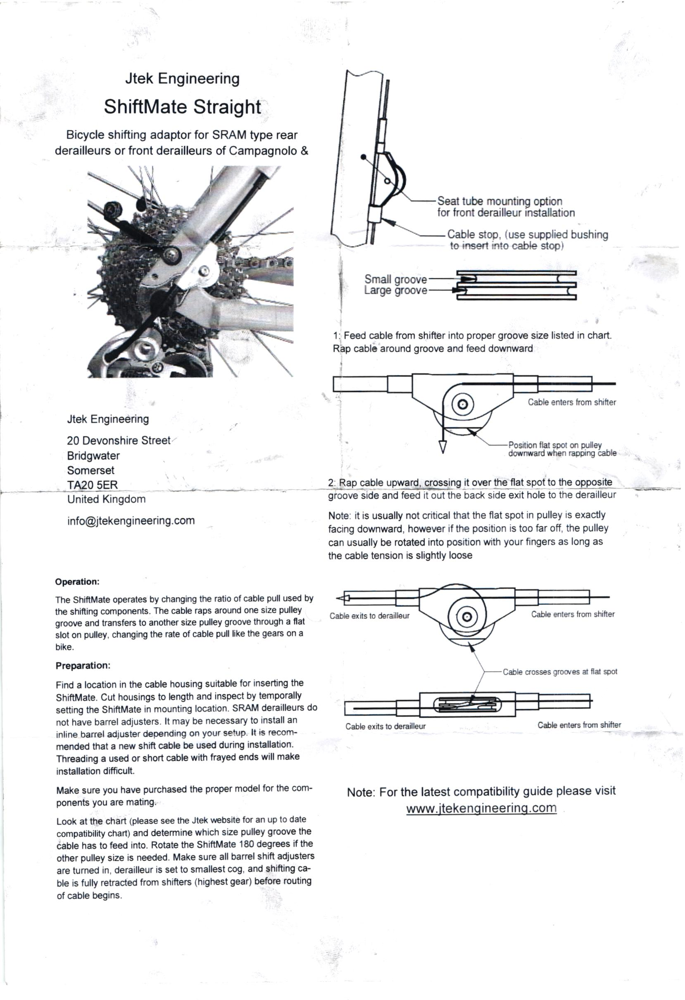
シフトメイトの説明書（作業しながら見てたので汚してしまった）。
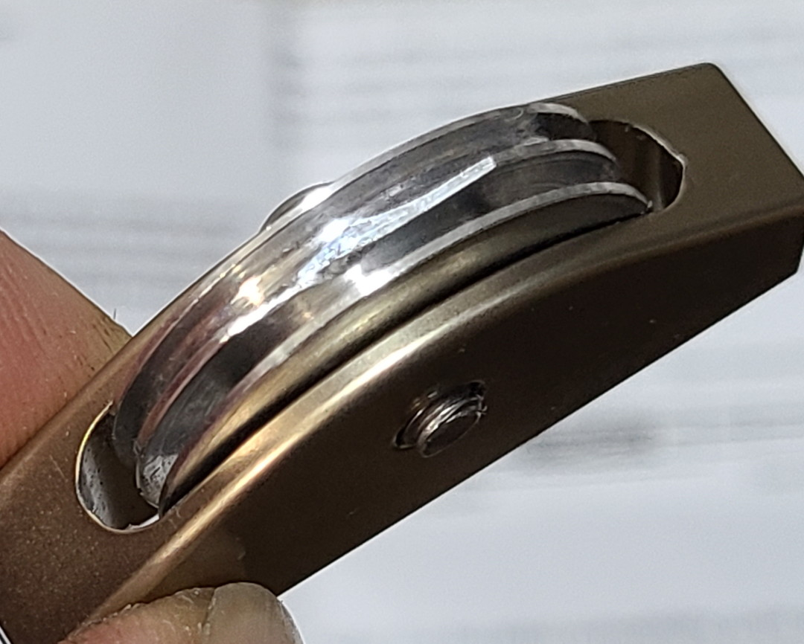
色々と書いてあるがシフトメイトを通す場所を決めて今回の場合円周がでかい方から小さい方へ切り込みのあるところで交差させて使えばいい。tanpanやトラベルエージェントよりだいぶシンプルな構造になっている。
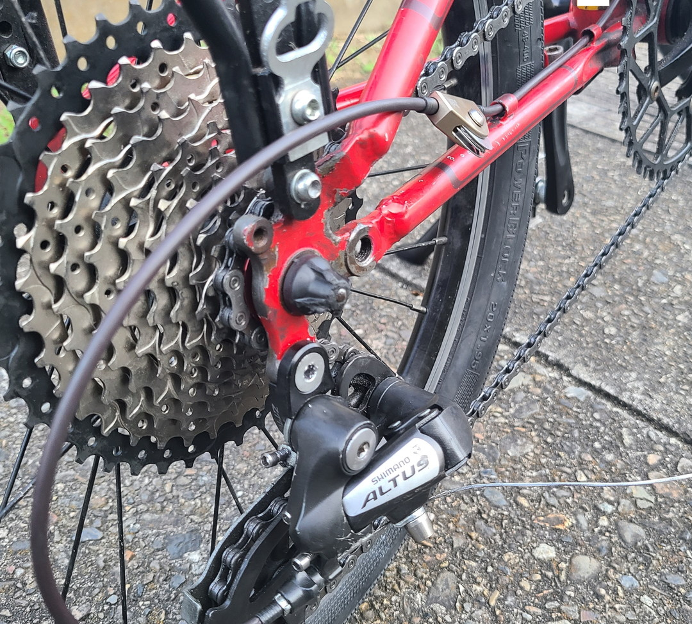
とりあえず仮組み。最初の方はディレーラーにワイヤーを固定する際にシフトメイトのクロス部分がずれるなど試行錯誤する必要があったがどうにか動かすことには成功した。
しかしこの位置だとかかとにぶつかってしまうという欠陥があったので後日位置をずらすことにした。
シフトメイト自体かつて使っている人がいたという伝聞情報ばかりヒットして実際に使用者の位置を調べるのに苦労した。あとでリンクを貼っておこうと思う。
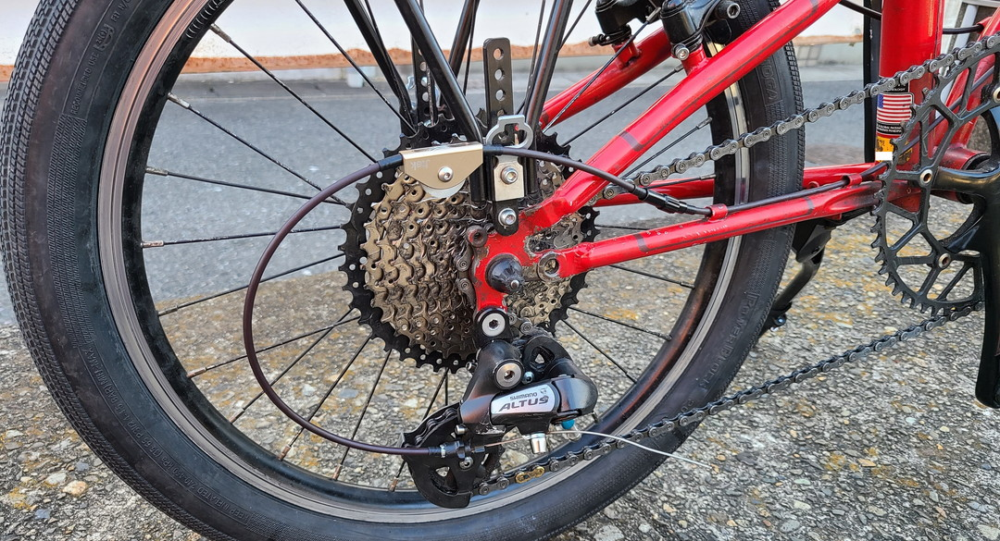
最終的にこういう配置でうまく機能した。友人からアジャスターキャップも使って調整するといいと渡されたので使ってみた。
これはディレーラーやシフターのワイヤーアジャスターでは調整ができない場合に使うものらしい。どうもシフトメイトは初期のびの影響を受けやすいようなので役に立った。
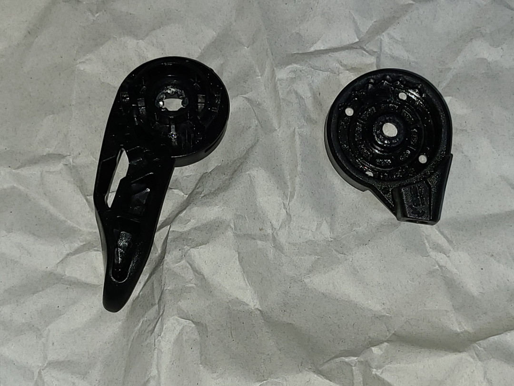
きれいにワイヤーを通せた様子。美しい。
シフトメイトの設置位置が確認できるサイトを載せて置く。自分はもう少し今の配置で試してみて、そのうちチューブの下側に移設しようか考えている。
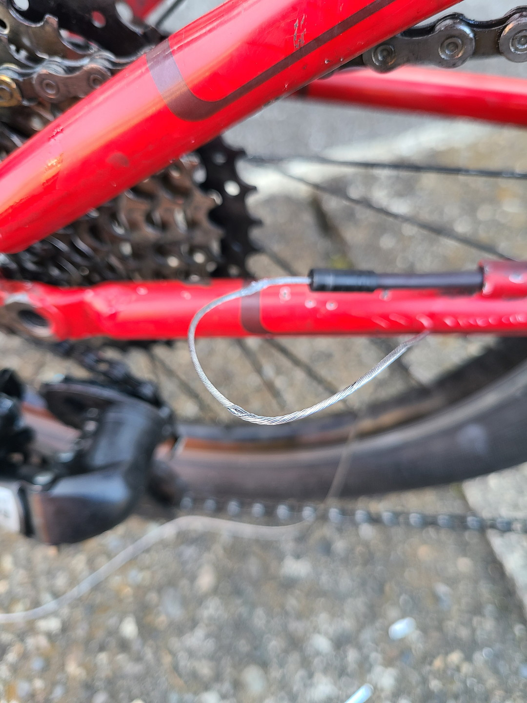
当たり前といえば当たり前だが一度外したインナワイヤーは使い物にならない。予備に何本かワイヤーを買っておくべきだろう。
感想
とりあえずこれでZee SL-M640とAltus RD-M310、そして11-42Tという奇妙な組み合わせで運用することができた。まだ真ん中のギアでじゃらつきがあるが、シビアなレースに出るわけではないし問題ないだろう。
変速はワンテンポ遅い気がする。比較対象がtiagra4600なので当たり前といえば当たり前か。んーしかし今回の実験のメリットはなんなんだろうか。tanpanやシフトメイトを使えば10速、11速のフラットバーシフターの選択肢が増える……くらいか。まあ実際11速ロードは選びようがないしあのシフター触ったことがあるけれど個人的にあんまり好みじゃなかった。それがMTB11速のラピッドファイヤーを使えるようになるのはカスタム欲をそそるだろう。
でも自分的には……いやーDeore買ったほうが安かったなぁ。まあ満足したけど。やっぱり街乗りにはアルタス！あと42T使わない。ぜっっっっったい要らなかった。
そもそもなんで10速化したかったのかを思い返した時に11-32Tの8速ワイドスプロケットだと間が開くからなんだよな。
開くから！
でもやったのは36と42の追加だよ！本末転倒じゃん！
どうしても衝動を抑えきれなくなったから仕方ない……。いやーきついっす。
もう沢山だ………!!!もうこりごりだ………!!!
幾度もそう思ったハズなのに
ホイール組みてェ～～～～……
そういやシフトメイト、3Dプリンターで自作してる人もいるみたいなんだよな。いいなぁ。
ではまた～。